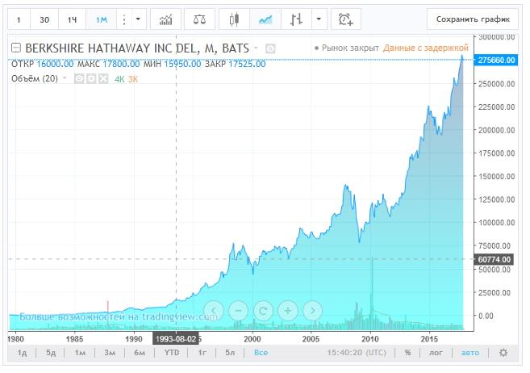

FAQ
Что это за проект и как здесь можно заработать?
DinoCapital — долгосрочный проект доверительного управления. У Вас есть свободные деньги, у нас есть большой опыт инвестирования в прибыльные проекты и торговли на бирже. Заработать в проекте можно тремя способами: покупая монетки (ссылка), приглашая в проект новых участников (ссылка) и получая еженедельную прибыль от инвестиций проекта (ссылка) (подробнее читайте раздел «Советы по инвестированию».)
Что такое «долгосрочный проект доверительного управления»?
В цивилизованном мире люди не хранят свои деньги под подушкой. Некоторые несут их в банк (хотя сейчас с отрицательными процентными ставками в банках много не накопишь!), но большинство вкладывает свои свободные деньги в фондовый рынок или инвестиционные фонды.
Одним из самых известных инвестиционных фондов в мире является фонд Quantum Джорджа Сороса. Инвесторы, вложившие в начале работы фонда 1 доллар, получили бы к моменту закрытия фонда 5500 долларов.
Другим известным инвестиционным фондом является Berkshire Hathaway Уоррена Баффета. Вот как менялась цена акций Berkshire Hathaway со временем.

За 30 лет цена акции увеличилась в 150 раз! Акционеры Berkshire Hathaway очень довольны.
Мы умеем находить выгодные активы для прибыльных инвестиций, и мы это успешно делаем уже не первый год. По этой причине мы рассчитываем, что цена монетки нашего Фонда достигнет цены в 30 долларов в течение года, а может быть и в течение нескольких месяцев.
Куда инвестируются средства участников проекта?
На финансовых рынках в разное время происходит движение различных активов. Иногда растёт в цене золото, но стоит на месте нефть. Иногда растёт британский фунт, но падает биткойн. Мы инвестируем собранные средства в различные активы, которые в данный момент времени приносят наибольшую прибыль. Часть средств инвестируется в расчёте на долгосрочную перспективу.
Уследить за всем рынком неквалифицированному Инвестору сложно. Мы делаем эту работу за Вас, доверьте профессионалам управление инвестированными деньгами!
Что это за монетки проекта?
Как в акционерном обществе акции являются голосами при принятии решений и долей в доходе компании, так и монетки в нашем проекте являются долей в доходе, получаемого проектом. Всего будет выпущено 100 000 монеток, таким образом, 1 монетка даёт 0,00001% от еженедельного дохода проекта, а 1000 монеток дают 1% от дохода.
Монетки Dino выпускаются партиями по 1000 штук. Каждая новая партия монеток выпускается по цене на 50 центов больше предыдущей. Таким образом монетки будут выпускаться по 1 доллару, по 1,5 доллара, 2 доллара, 2,5 доллара и так далее.
Не имеет значения, купили Вы монетки по 1 доллару или по 20 долларов. Одна монетка — 0,00001% дохода. Конечно, лучше купить монетки пораньше, по низкой цене. ☺
Сколько монеток можно покупать и сколько они стоят?
Вы можете покупать монетки в любом количестве, сколько захотите. Цена монетки растёт постоянно, поэтому лучше их купить раньше, таким образом Вы потратите меньше денег на получение доли в доходе проекта и раньше начнёте получать этот самый доход.
Где и как можно продать монетки?
При цене монеток 20 долларов, но не раньше 2 месяцев с момента старта проекта, будет запущена биржа, на которой можно будет продать монетки по складывающейся на тот момент цене, определяемой спросом и предложением. Покупайте монетки сейчас, пока они ещё стоят недорого!
Как заработать на Партнёрской программе?
В проекте реализована двухуровневая Партнёрская программа. Вы получаете 20% от инвестиций в проект (покупки монеток) Ваших Партнёров первого уровня и 10% от инвестиций в проект Ваших Партнёров второго уровня. Как только Ваш Партнёр покупает монетки Dino, Вы сразу получаете Партнёрские комиссионные отчисления на свой аккаунт в Личном Кабинете. Можете выводить заработанное, можете покупать монетки и зарабатывать ещё больше.
Можно ли приглашать в проект новых участников, не покупая монетки?
Можно!
Можно ли приглашать в проект родственников и работать с одного компьютера?
Можно! Мы не накладываем ограничений на приглашение в проект новых участников. Пусть все зарабатывают!
Как получать доход в проекте от инвестиций?
Один раз в неделю, на выходных, мы выводим часть заработанной прибыли из тех активов, куда вложены средства проекта. Распределение средств осуществляется пропорционально долям участников проекта. Например, если Вы купили 2000 монеток (2% дохода проекта), а прибыль проекта за текущую неделю составила 3000 долларов, Вы получите 2% от это суммы, то есть, 60 долларов. Эта прибыль поступит на Ваш аккаунт в Личном Кабинете. Вы будете получать сообщение о распределении Вам прибыли на электронную почту, указанную в аккаунте при регистрации.
С какими платёжными системами работает проект? Как ввести деньги в проект и как их вывести?
Проект работает с платёжной системой AdvCash, которая доказала своё удобство в Интернете. Если Вы не знакомы с этой платёжной системой, то Вам сюда и сюда.
Пополнить кошелёк AdvCash можно через обменные пункты. Лучший курс обмена смотрите здесь Bestchange. На Ваш аккаунт в Личном Кабинете, будут поступать комиссионные от Партнёрской программы (ссылка) и еженедельный доход от инвестиций проекта (ссылка).
Сколько можно заработать в проекте?
Мировая практика инвестиций показывает, что предыдущая прибыль ни в коей мере не может являться гарантией будущей прибыли. Более того, мы никоим образом не можем Вам обещать получение какой-то гарантированной (например, стабильные 2% или 10% в месяц) прибыли, наш проект не является HYIP’ом.
Рынок — это всегда риск и непредсказуемость. Какие-то инвестиции приносят прибыль быстро, какие-то могут «сработать» через несколько месяцев. Тем не менее, исходя из нашего предыдущего опыта инвестиций, можно рассчитывать на прибыль, превышающую уровень инфляции. В несколько раз. Например, некоторые успешные трейдеры показывают среднюю прибыль 5-10% в месяц в течение длительного времени. Но это не значит, что именно такую прибыль будут получать участники нашего проекта, поскольку рынок непредсказуем. Мы будем стараться максимизировать прибыль, получаемую участниками проекта. Но мы не может ничего гарантировать и обещать.
Наш проект ориентирован на долгосрочную работу. Поэтому мы инвестируем в стабильные активы, которые на протяжении длительного времени показывают стабильный результат. По этой причине прибыль, получаемая проектом в разные недели, будет различной.
Вначале прибыль проекта будет небольшой, поскольку требуется время, чтобы инвестиции начали приносить прибыль. По мере того, как в проект будет поступать больше денег от участников, покупающих монетки Dino, будет становиться больше возможностей для прибыльного инвестирования.
Некоторые рекомендации по заработку в проекте описаны в разделе «Советы по инвестированию».
Покупайте монетки Dino, увеличивайте свою долю в прибыли проекта!
Ваш проект — пирамида! Вы используете деньги новых участников для выплаты старым участникам
Наш проект не является финансовой пирамидой. Собранные проектом средства инвестируются в реальные рыночные активы. Многие люди, слабо знакомые с маркетингом, считают, что если проект использует Партнёрскую программу, то он непременно является финансовой пирамидой. Это не верно! Существует множество инструментов продвижения (communication mix), причём в каждом конкретном случае какие-то инструменты продвижения являются самыми эффективными (не все знают, что некоторые всемирно известные компании тратят на продвижение от 50 до 90% своего бюджета, а MLM-компании и вовсе основаны на одной лишь Партнёрской программе). В каком-то случае самым эффективным инструментом продвижения является реклама, где-то — использование поисковой оптимизации (SEO) или отношений с общественностью (PR). В нашем случае очень эффективным инструментом продвижения является Партнёрская (реферральная) программа. На неё уходит 30% получаемых доходов. Ещё 20% идёт на развитие проекта и 50% инвестируются в различные финансовые активы, которые приносят прибыль участникам проекта. Можно было потратить 30 или более процентов бюджета, отдав их рекламной фирме с непредсказуемым конечным результатом или же SEO-специалистам с ещё более непредсказуемым результатом. ☺ Мы посчитали, что лучше отдать эти деньги тем участникам проекта, которые проявят активность и пригласят в проект новых участников.
Какой минимум для вывода денег из проекта?
1 доллар.
Есть ли какие-то ограничения для участников проекта?
В проекте не могут участвовать граждане Ирана, Северной Кореи, Сирии, Судана, Бангладеш, Эквадора, Киргизии, Соединённых Штатов Америки по причине «своеобразного» отношения властей этих стран к Интернет-заработку.
Если Вы являетесь гражданином какой-то из этих стран, покиньте, пожалуйста, сайт проекта.